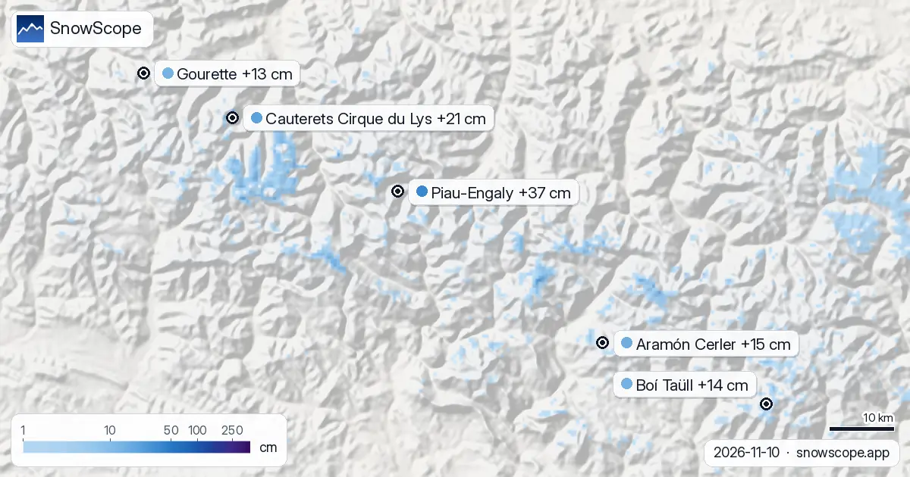

37 cm hasta el 13 de noviembre: dónde es mejor la previsión de nieve en los Pirineos
Hasta 37 cm: es lo que nuestra previsión da a Piau-Engaly hasta el 13 de noviembre. Hasta el 13 de noviembre, nuestra previsión da 37 cm en Piau-Engaly, 21 cm en Cauterets Cirque du Lys y 15 cm en Aramón Cerler. Las cifras de las estaciones de esquí son estimaciones del modelo para las pistas altas; las estaciones de medida miden en un punto, en la fecha indicada.
Consulta la previsión de nieve en tiempo real de Piau-Engaly en la app SnowScopeEspesor de nieve, alertas de nieve polvo y mapa 3D, gratis.
La nieve que hay hoy
De estas estaciones, Cauterets Cirque du Lys tiene hoy más nieve en las pistas altas, unos 20 cm; después vienen Aramón Cerler 8 cm y Boí Taüll 8 cm.
37 de 53 estaciones en los Pirineos tienen hoy nieve en las pistas altas, y nuestro modelo cuenta 880 km² de superficie nevada.
| Estación | Espesor de nieve | Nieve nueva, 72 h | Previsto, próximos días | Cota máx. |
|---|---|---|---|---|
| Piau-Engaly | 1 cm | 0 cm | 37 cm | 2527 m |
| Cauterets Cirque du Lys | 20 cm | 0 cm | 21 cm | 2420 m |
| Aramón Cerler | 8 cm | 0 cm | 15 cm | 2618 m |
| Boí Taüll | 8 cm | 0 cm | 14 cm | 2747 m |
| Gourette | 0 cm | 0 cm | 13 cm | 2453 m |

Cota de nieve y laderas
En Piau-Engaly, la cota de congelación llega a 2900 m-3320 m el 10 de noviembre, por encima de la cota alta de la estación (2527 m): ese día puede haber lluvia o nieve húmeda en todas las pistas.
En Cauterets Cirque du Lys, la cota de congelación llega a 2990 m-3350 m el 10 de noviembre, por encima de la cota alta de la estación (2420 m): ese día puede haber lluvia o nieve húmeda en todas las pistas.
En Aramón Cerler, la cota de congelación llega a 2740 m-3230 m el 11 de noviembre, por encima de la cota alta de la estación (2618 m): ese día puede haber lluvia o nieve húmeda en todas las pistas.
Previsión
Hasta el 13 de noviembre, nuestra previsión da 14 cm en Boí Taüll y 13 cm en Gourette.
La superficie nevada pasó de 2150 km² el 8 de noviembre a 880 km² hoy, y nuestra previsión da 790 km² el 13 de noviembre.
La seguridad primero
El nivel oficial de peligro de aludes para la zona de Piau-Engaly es hoy 1 en la escala de 5 niveles (Météo-France – Bulletin d'estimation du risque d'avalanche).
Las previsiones a varios días pueden cambiar: vuelve a mirar el mapa el día antes de viajar.
Consejos para esquiadores
- Las previsiones a varios días pueden cambiar: vuelve a mirar el mapa el día antes de viajar.
- Donde la cota de congelación suba por encima de la estación, cuenta con nieve húmeda y usa los remontes más altos.
- La nieve nueva es mejor en las primeras horas: sal temprano, antes del sol y de la gente.
- Antes de salir fuera de pista o de travesía, lee el boletín oficial de aludes (enlaces abajo).
- Activa una alerta de nieve polvo en la app SnowScope para saber cuándo Piau-Engaly recibe nieve nueva.
Sobre estas cifras
Los espesores de nieve de las estaciones son la nieve más profunda en las pistas altas según el modelo de nieve de SnowScope (unos 1 km, cálculo del 10 de noviembre); son estimaciones para una zona, no una medida en un punto. Los valores de las estaciones de medida son medidas en la fecha indicada. Las previsiones pueden cambiar. Consulta siempre el boletín oficial de aludes antes de salir fuera de pista.
Boletines oficiales de aludes: Météo-France – Bulletin d'estimation du risque d'avalanche
Citar este informe
Para investigación, docencia o prensa: cifras y gráficos reutilizables libremente bajo CC BY 4.0 con esta cita.
SnowScope (2026), 37 cm hasta el 13 de noviembre: dónde es mejor la previsión de nieve en los Pirineos, https://snowscope.app/blog/es/2026/11/pyrenees-piau-engaly-snow-forecast-10-november-2026.html, consultado el 2026-11-10
SnowScope (Atlas Labs). (2026, November 10). 37 cm hasta el 13 de noviembre: dónde es mejor la previsión de nieve en los Pirineos. SnowScope snow reports. https://snowscope.app/blog/es/2026/11/pyrenees-piau-engaly-snow-forecast-10-november-2026.html
BibTeX
@misc{snowscope2026pyreneespiauengalysnowfo,
author = {{SnowScope (Atlas Labs)}},
title = {37 cm hasta el 13 de noviembre: dónde es mejor la previsión de nieve en los Pirineos},
year = {2026},
month = nov,
howpublished = {\url{https://snowscope.app/blog/es/2026/11/pyrenees-piau-engaly-snow-forecast-10-november-2026.html}},
note = {Published 2026-11-10 11:18 UTC; accessed 2026-11-10}
}· CC BY 4.0 · Métodos, datos y herramientas →
Piau-Engaly: nieve y temperatura según la altura, este invierno vs el pasado (herramientas) →
Sigue Piau-Engaly
Gratis: un aviso cuando llega la nieve y la previsión cada mañana.
Más partes de nieve

Nuestra previsión pone la isoterma de 0 °C en los Pirineos entre 2610 m y 3840 m en los días que vienen. En el momento más templado del día la cota …

Comparamos la nieve de hoy en 4 estaciones en los Pirineos con la misma fecha de cada uno de los 46 inviernos pasados. 1 están claramente por encima …

Andorra no tiene un gran aeropuerto: cómo llegar a Grandvalira desde Barcelona o Toulouse, el túnel de Envalira, la carretera CG2 y los aparcamientos.